Part 9 · Traffic Control for Bicycle Facilities · Chapter 9E
Markings
The complete set of pavement marking treatments for California's four bikeway classes — bicycle lane lines, symbols, and arrows; buffer-separated and physically separated bicycle lanes; intersection extensions and mixing zones; shared-lane markings; two-stage turn boxes and bicycle boxes; shared-use path markings; and green-colored pavement — with the dimensions, colors, and conditions of use that govern each.
9E.01Bicycle Lanes (Class II Bikeways (Bike Lane or Buffer-Separated Bicycle Lane))
- 01Pavement markings designate that portion of the roadway for preferential use by bicyclists. Markings inform all road users of the restricted nature of the bicycle lane.
- 02Longitudinal pavement markings and bicycle lane symbol or word markings (see Figure 9E-1) shall be used to define bicycle lanes.
- 02aThe BIKE LANE pavement markings shall be placed on the far side of each intersection.
- 02bThe BIKE LANE pavement markings may also be placed at other locations as desired.
- 02cExamples of BIKE LANE pavement markings are shown in various figures in this chapter.
- 02dOptional word, arrow, and symbol markings with details as shown in Figure 9E-1 may be used.
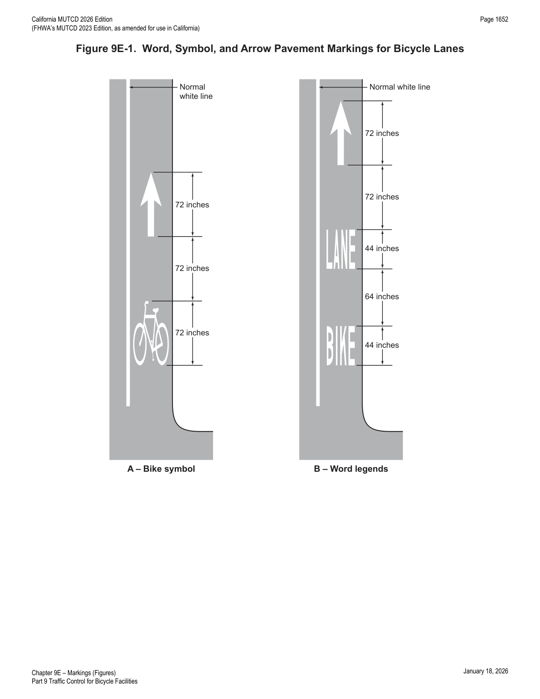
- 03The first symbol, or word, and/or green-colored pavement marking in a bicycle lane should be placed at the beginning of the bicycle lane, and downstream symbol or word markings should be placed after major intersections. Additional symbol or word markings should be placed at periodic intervals along the bicycle lane based on engineering judgment. Refer to Figure 9E-109(CA).
- 03aBicycle lane markings on Class II Bikeways should be placed a constant distance from the marked lane line or centerline, as appropriate. Bike lanes with parking permitted should not be directed toward the curb at intersections or localized areas where parking is prohibited, since that practice prevents bicyclists from following a straight course. Where transitions from one type of bike lane to another are necessary, smooth tapers should be provided.
- 03bClass II Bikeways require standard signing and pavement markings as shown in Figure 3A-112(CA). Bike lane lines are not typically extended through intersections.
- 03cWhere right turns are not permitted, the solid bike lane stripe should extend to the edge of the intersection and begin again on the far side. Where there is no right-turn-only lane, but right turns are permitted, the solid stripe should terminate 50 feet to 200 feet prior to the intersection.
- 03dA dashed line, as shown in Figure 3A-112(CA), may be carried to, or near, the intersection. Where city blocks are short (less than 400 feet), the length of dashed stripe may be 50 feet.
- 03eWhere blocks are longer or vehicle speeds are high (greater than 35 mph), the length of dashed stripe should be increased to 200 feet.
- 03fMarkings for a bike lane where vehicle parking is prohibited or permitted are shown in Figures 9E-2, 9E-2(CA), 9E-6(CA), 9E-101(CA), 9E-103(CA), and 9E-106(CA).
- 03gWhere motorist right turns are permitted, the solid bike lane shall either be dropped entirely, or dashed beginning at a point between 50 feet and 200 feet in advance of the intersection.
- 03hIn areas where parking stalls are not necessary (because parking is light), a 4- to 6-inch-wide solid white stripe on local agency roadways and a 6-inch-wide stripe on state highways may be painted to fully delineate the bike lane. This may be advisable where there is concern that motorists may misconstrue the bike lane to be a traffic lane.
- 04An arrow marking (see Figure 9E-1) may be used in conjunction with the bicycle lane symbol or word marking, placed downstream from the symbol or word marking.
- 05Where the bicycle lane symbols or word markings are used, Bicycle Lane signs (see Section 9B.04) may also be used, but not necessarily adjacent to every set of pavement markings, in order to avoid overuse of the signs.
- 06Section 3H.06 contains information on green-colored pavement for use in bicycle lanes. Refer to Figure 9E-109(CA).
- 06aRaised barriers (e.g., raised traffic bars and asphalt concrete dikes) or raised pavement markers shall not be used to delineate bike lanes on Class II Bikeways.
- 06bRaised barriers prevent motorists from merging into bike lanes before making right turns, as required by the CVC, and restrict the movement of bicyclists desiring to enter or exit bike lanes.
- 06cThey also impede routine maintenance. Raised pavement markers increase the difficulty for bicyclists when entering or exiting bike lanes, and discourage motorists from merging into bike lanes before making right turns.
- 06dPhysical barriers or other vertical elements may be used to convert a Class II Bikeway to a Class I Bikeway (Bike Path) or Class IV Bikeway (Cycle Track, Separated Bikeway or Separated Bicycle Lane).
- 07The bicycle symbol or BIKE LANE pavement word marking and the pavement marking arrow shall not be used in a shoulder.
- 08A portion of the roadway shall not be established as both a shoulder and a bicycle lane.
- 08aThe BIKE LANE may count towards the shoulder width per Caltrans Highway Design Manual Index 301.2.
- 09Where a shoulder is provided or is of sufficient width to meet the expectation of a highway user in that it can function as a space for emergency, enforcement, or maintenance activities, or avoidance or recovery maneuvers, Section 9B.16 contains information regarding the Bicycles Use Shoulder Only sign that can be used to denote locations on a freeway or expressway where bicycles are permitted on an available and usable shoulder.
- 10Examples of pavement markings for bicycle lanes on a two-way street are shown in Figure 9E-2 and 9E-2(CA).
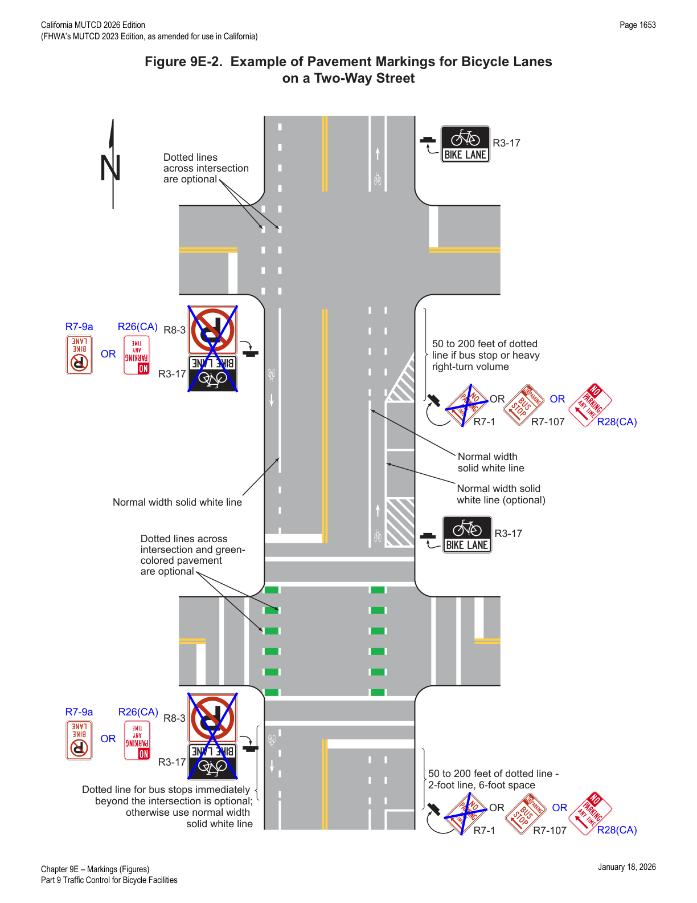
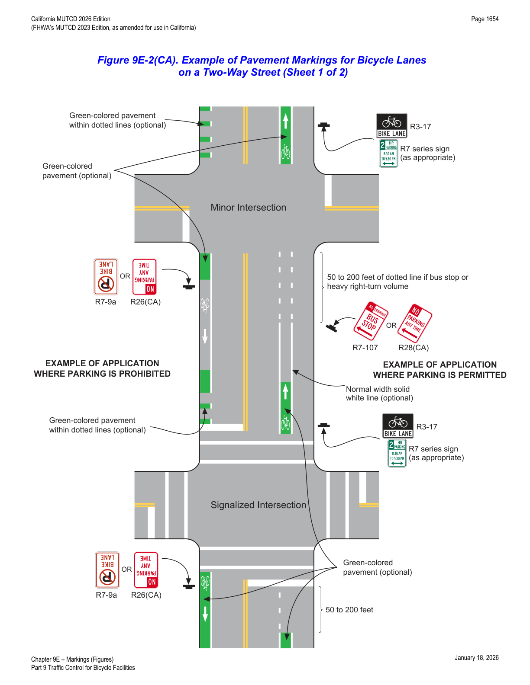
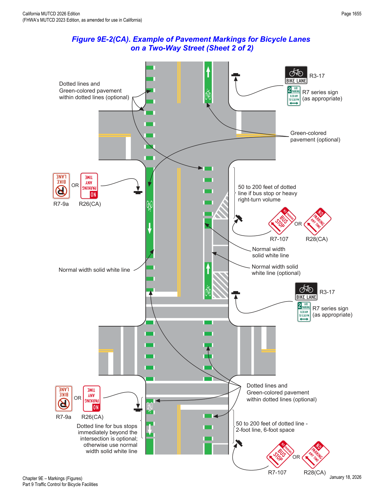
In practice, the 50-to-200-foot dashed-stripe rule is one of the most frequently misapplied dimensions in bike lane design — remember the trigger is the 35 mph threshold (200 feet at or above, 50 feet below), not block length alone, and short blocks under 400 feet allow the 50-foot minimum regardless of speed.
9E.02Bicycle Lanes at Intersection Approaches (Class II Bikeways)
- 01Except as provided in Paragraph 2 of this Section, a through bicycle lane shall not be positioned to the right of a right-turn-only lane or to the left of a left-turn-only lane.
- 02A through bicycle lane may be positioned to the right of a right-turn-only lane or to the left of a left-turn-only lane provided that the bicycle lane is controlled by a traffic signal that displays bicycle signal indications (see Chapter 4H).
- 02aA bicycle lane for travel in the same direction as the general-purpose lanes may be placed on the left-hand side of the general-purpose lanes.
- 03Unless controlled by a bicycle signal indication, a bicyclist continuing straight through an intersection from the right of a right-turn-only lane or from the left of a left-turn-only lane would be inconsistent with normal traffic behavior and would violate the expectations of right-turning or left-turning motorists.
- 03aWhen a bike lane approaches an intersection with right- or left-turn-only lanes, Figure 9E-3 and Figure 9E-3(CA) may be used.
- 03bWhere through motor vehicle lanes approaching an intersection become mandatory turn lanes, adjacent bike lanes should be delineated using Figure 9E-3(CA).
- 04When the right (left) through lane is dropped to become a mandatory right-turn (left-turn) lane, the bicycle lane markings should stop at least 100 feet before the beginning of the right-turn (left-turn) lane. Through bicycle lane markings should resume to the left (right) of the mandatory right-turn (left-turn) lane.
- 05Except as provided in Paragraph 2 of this Section, an optional through-right (through-left) turn lane next to a mandatory right-turn (left-turn) lane should not be used where there is a through bicycle lane.
- 05aA dashed line across the right-turn-only lane should not be used on extremely long lanes, or where there are double right-turn-only lanes. For these types of intersections, all striping should be dropped to permit judgment by the bicyclists to prevail.
- 06A bicycle lane located on an intersection approach between general-purpose lanes for motor vehicle movements shall be marked with at least one bicycle symbol and at least one arrow pavement marking as provided in Paragraph 4 of Section 9E.01.
- 06aRefer to FHWA's List of Known Errors for an error in the Paragraph 6 text. Refer to Section 1A.04 for more details.
- 07A bicycle lane shall not be marked within a general-purpose lane, either with dotted or any other line markings.
- 08Where there is insufficient width in the roadway to include both a bicycle lane and a general-purpose turn lane, bicycle travel may be accommodated within the turn lane or general-purpose lane using shared-lane markings.
- 09Where a general-purpose turn lane is controlled by a traffic control signal, through bicycle movements shall not be accommodated in the turn lane unless the turning movement is always permitted to proceed simultaneously with the adjacent through movement.
- 09aA Bicycle Crossing (W11-1) sign may be used to warn road users of the potential for bicyclists crossing their path. Refer to Section 9B.18.
- 09bWhen a bike lane approaches a ramp intersection that intersects the local facility at or close to 90 degrees (typical of a compact or spread diamond configuration), then Figure 9E-3 and Figure 9E-3(CA) may be used.
- 09cHowever, when a bike lane approaches one or more ramp intersections that intersect the local facility at various angles other than 90 degrees (typically high-speed, skewed ramps), Figure 9E-102(CA) should be used.
- 10Examples of bicycle lane markings on approaches to intersections are shown in Figures 9E-3, 9E-3(CA), 9E-4, and 9E-9.
- 11The longitudinal line defining a bicycle lane should be dotted on approaches to intersections where turning vehicles are permitted to cross the path of through-moving bicycles (see Figure 9D-7).
- 11aIf used, the space for bicycle use shall be delineated by Detail 39 on the right of the through lane and Detail 38A on the left of the right-turn-only lane. Refer to Figure 3A-112(CA).
- 12Buffer-separated and separated bicycle lanes require additional considerations at intersections, including sight distances for bicycles and other road users, user expectations, and intersection geometry.
- 13A buffer-separated or separated bicycle lane may be shifted closer to, or farther away from, the adjacent general-purpose lane depending upon site-specific conditions (see Drawings D and E in Figure 9E-7).
- 14A buffer-separated or separated bicycle lane shifted away from the adjacent general-purpose lane at an intersection can create space for a motor vehicle to queue between the general-purpose lane and the extension of the bicycle lane. This design can also improve the safety and comfort of bicyclists by reducing the speed of turning motor vehicles, improving sightlines, and creating additional buffer space prior to the conflict point with turning motor vehicles.
- 15The purpose of shifting a buffer-separated or separated bicycle lane away from the adjacent general-purpose lane is to allow the driver of a turning vehicle to undertake the tasks of turning and scanning for bicycle cross traffic in isolation versus simultaneously. Sufficient sight distance for both drivers and bicyclists is important in this design (see Drawing E in Figure 9E-7).
- 16The purpose of shifting a buffer-separated or separated bicycle lane toward the adjacent general-purpose lane is to improve the visibility of bicyclists to the adjacent traffic and avoid conflicts between turning motor vehicles and bicyclists (see Drawing D in Figure 9E-7).
- 16aAt locations with right-turn-only lanes where bicycles are not prohibited but Class II bicycle facilities do not exist on the approach, a minimum 4-foot-wide space for bicycle use may be provided between the right-turn and through lane; where the posted speed is greater than 40 mph the minimum width should be 6 feet.
- 16bWhen the width between the right-turn and through lane is greater than 4 feet, a buffer area may be striped adjacent to the 4-foot minimum width for bicycle travel, regardless of the posted speed.
- 16cThe buffer may be placed on the left or on the right of the 4-foot space for bicycle travel.
- 16dRefer to Caltrans' Highway Design Manual, Index 403.6, Turning Traffic.
- 16eRefer to Figure 9E-3 and Figure 9E-3(CA) for details on striping and Figure 9E-6 and Figure 9E-6(CA) for details on buffer area striping.
- 17Staggering stop lines (see Section 3B.19) so that general-purpose lanes stop further in advance from the intersection than the bicycle lane can improve the visibility of bicyclists for drivers of turning vehicles (see Drawing D in Figure 9E-7).
- 18Where a general-purpose mandatory turn lane is provided at an intersection and the approach also includes a separated or buffer-separated bicycle lane, a mixing zone may be established to allow general-purpose turning traffic to share the roadway space with bicyclists (see Figure 9E-5).
- 19Mixing zones shall be used only where the bicycle lane is one-way in the same direction of travel as the adjacent general-purpose lane.
- 20Mixing zones with a yielding area shall have yield markings indicating where general-purpose traffic entering the shared space shall yield to bicyclists.
- 21Where a mixing zone continues to the intersection itself, sharing space between bicyclists and general-purpose turning traffic, shared-lane markings and turn arrows shall be provided in the lane.
- 22Mixing zones require bicycles and general traffic to share space, interrupting a buffer-separated or separated bicycle lane where bicycle traffic is otherwise separated from general traffic. The preference is to provide a dedicated bicycle facility for the intersection approach; if that is not possible, the mixing zone needs to indicate that bicyclists and motorists are entering a shared condition.
- 23Where a mixing zone provides for the re-establishment of a bicycle lane after bicycles and general-purpose lanes cross paths, a buffered or physically separated space should be provided between the bicycle lane and the adjacent general-purpose lane (see Drawing C in Figure 9E-5).
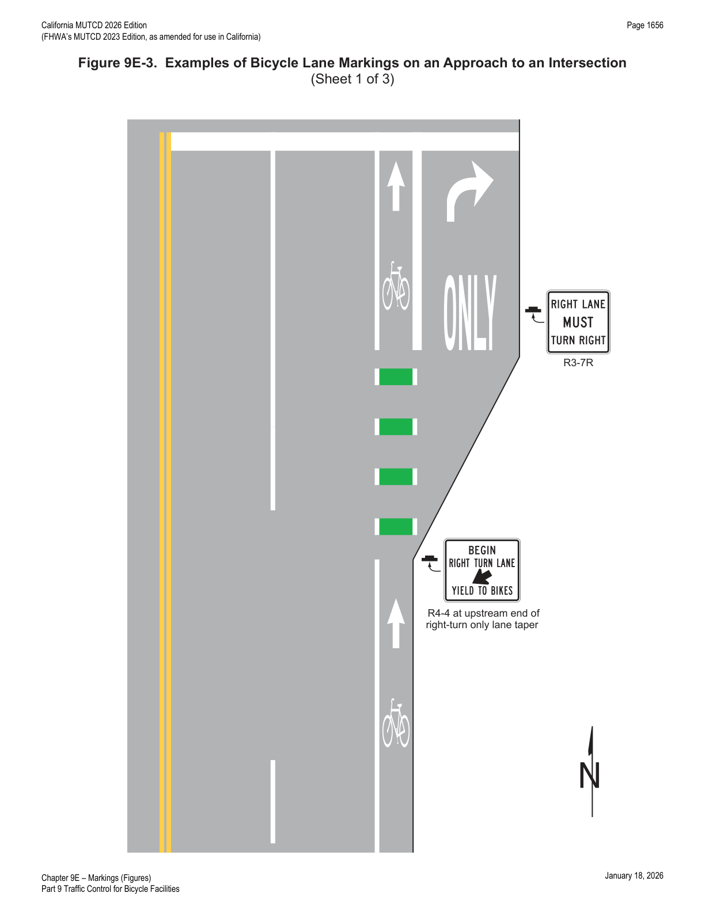
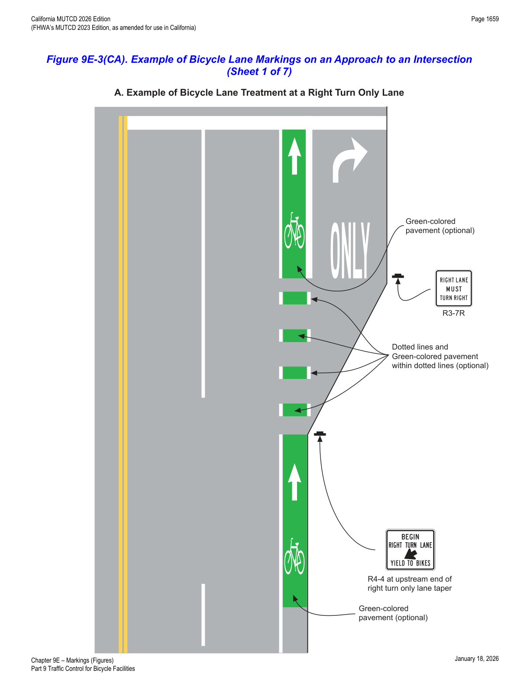
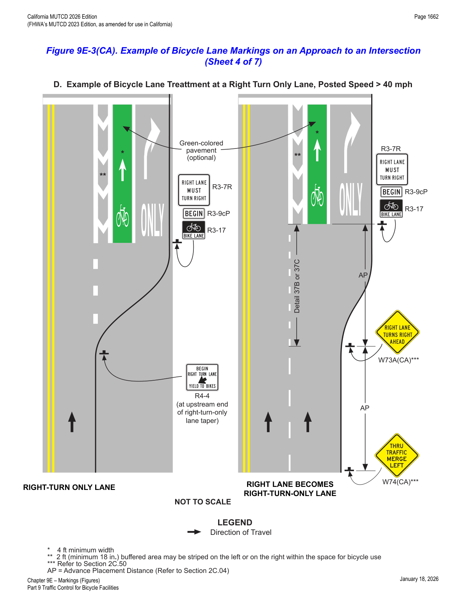
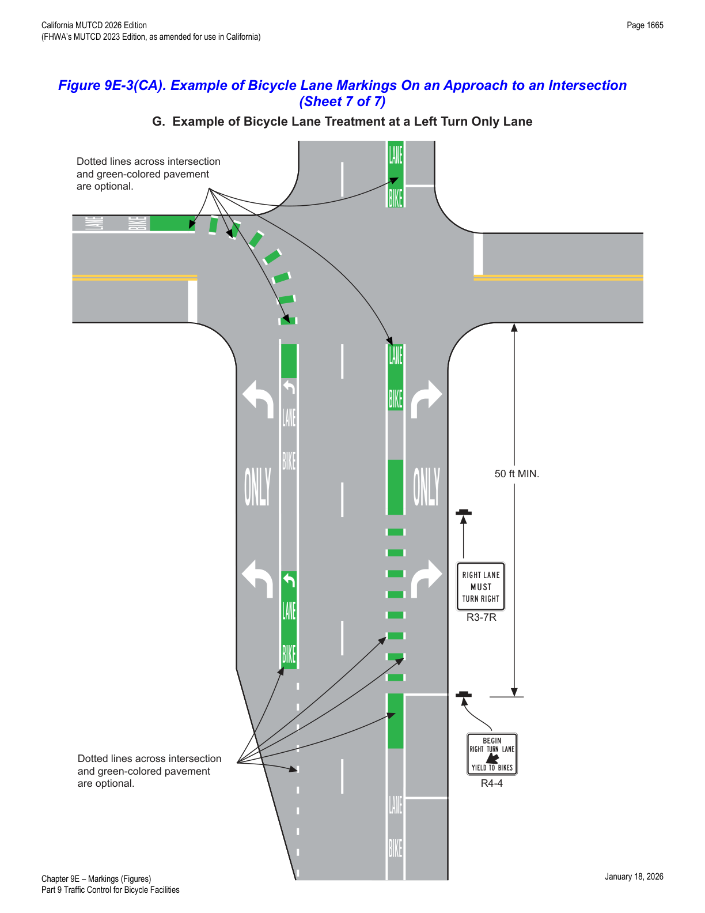
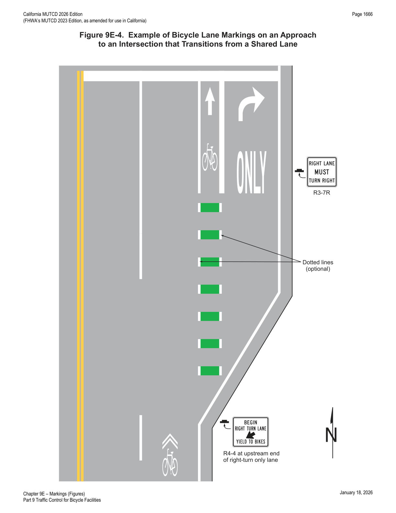
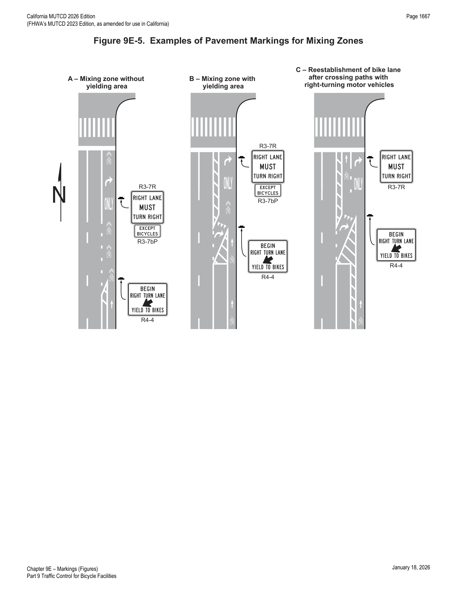
In practice, the 100-foot stop-back for bicycle lane markings before a mandatory turn lane (Paragraph 4) is a common field-check item — verify the bicycle symbol/arrow reappears on the far side of the turn lane per Paragraph 6, not just that the near-side marking stops.
9E.03Extensions of Bicycle Lanes through Intersections (Class II Bikeways)
- 01Extensions of bicycle lanes through intersections can help identify the paths of bicyclists and guide them on movements that could be difficult to discern. Extensions also assist other road users of the intersection to identify where bicyclists are expected to operate and to recognize potentially unexpected conflict points.
- 02The design, placement, and maintenance of bicycle lane extensions through intersections are important considerations, especially when contiguous to a crosswalk, to avoid potential confusion to pedestrians with vision disabilities.
- 03The width and color of lane extension markings are discussed in Section 3B.11.
- 04The bicycle symbol, the arrow marking, pavement word markings, or a combination thereof may be used in bicycle lane extensions through intersections.
- 05Green-colored pavement may be used in a bicycle lane extension in accordance with the provisions of Section 3H.06.
- 06Shared-lane markings or chevron markings shall not be used in bicycle lanes or bicycle lane extensions (see Section 9E.09).
- 07Extensions of bicycle lanes through intersections shall use dotted line patterns.
- 08Separated and buffer-separated bicycle lanes may have alignments that are not as obvious within an intersection as a standard bicycle lane, therefore additional conspicuity is important where these types of bicycle lanes cross intersections.
- 09Lane extension markings should be used to extend a buffer-separated or separated bicycle lane through intersections and driveways.
- 10The extension of a bicycle lane through an intersection should use two lines defining both lateral limits of the bicycle lane.
- 10aThe Bike Lane Intersection (Detail 39A) line as shown in Figure 3A-112(CA) may be used to extend the bike lane to or through an intersection.
- 10bThe extension of bicycle lanes through intersections advises motorists that bicyclists are likely to use the intended path.
- 10cBicycle lane markings may be extended through intersections consistent with the provisions of Section 3B.11.
- 10dBicycle lane markings as shown in Figure 9E-103(CA) may be used within the boundaries of bicycle lane extensions.
- 10eGreen-colored pavement may be used in a bicycle lane extension through an intersection or a driveway consistent with Section 3H.06. Refer to Figures 9E-2, 9E-2(CA), 9E-3, 9E-3(CA), 9E-8, 9E-102(CA), 9E-103(CA), and 9E-106(CA).
- 11Where the path of the bicycle lane through the intersection is contiguous to a crosswalk, two longitudinal dotted lines shall be provided to establish the lateral limits of the bicycle lane extension. The transverse line establishing one side of the crosswalk, or the limit of a high-visibility crosswalk pattern (see Section 3C.05) that does not employ a transverse line, shall not be used to demarcate one side of the bicycle lane extension.
- 12Markings for a bike lane through a typical interchange are shown in Figure 9E-102(CA).
- 13Figure 9E-102(CA) may also be used where the preferred designation is a Class III Bikeway (Bike Route), with the Bike Lane (R3-17) signs being replaced with Bike Route (D11-1) signs and the bike lane delineation eliminated. A 4- to 6-inch-wide stripe on local agency roadways, and a 6-inch-wide stripe on state highways, may be used to delineate the shoulder throughout the bike route designation.
- 14Signing and striping as shown in Figure 9E-102(CA) shall be repeated at additional onramps within the interchange.
- 15Where the onramps intersect at the local road at or near 90 degrees, the striping should be per Figure 9E-3 and Figure 9E-3(CA).
9E.04Bicycle Lanes at Driveways (Class II Bikeways)
- 01The definition of an "Intersection" in Section 1C.02 contains information to determine if a driveway can be considered an intersection.
- 02Bicycle lanes may be continued through a driveway using solid or dotted longitudinal lines.
- 03The bicycle symbol, the arrow marking, pavement word markings, or a combination thereof may be used in bicycle lane extensions through driveways.
- 04Green-colored pavement (see Section 3H.06) may be used as a background to enhance the conspicuity of the bicycle symbol at driveways.
9E.05Bicycle Lanes at Circular Intersections (Class II Bikeways)
- 01Bicycle lanes shall not be provided in the circulatory roadway of an unsignalized circular intersection that includes conflicts at entry or exit points (see Chapter 3D), except as provided in Paragraph 4 of this Section.
- 02Bicycle lane markings should stop at least 100 feet before the crosswalk, or if no crosswalk is provided, at least 100 feet before the yield line, or if no yield line is provided, then at least 100 feet before the edge of the circulatory roadway.
- 03If used, bicycle crossings should be a minimum of 20 feet from the edge of the circular roadway.
- 03aRefer to FHWA's List of Known Errors for an error in the Paragraph 3 text. Refer to Section 1A.04 for more details.
- 04Separated bicycle lanes may be used in circular intersections.
- 05Separated bicycle lanes allow bicycles to navigate a circular intersection and its crossing points without merging into traffic and without dismounting and using a crosswalk at the intersection crossing point. This is beneficial at multi-lane and higher-speed circular intersections.
- 06Section 9E.10 contains information on using shared-lane markings to facilitate the bicycle movement through a circular intersection.
- 07The "Guide for the Development of Bicycle Facilities," 2012 Fourth Edition, American Association of State Highway and Transportation Officials, contains information on designing for bicycles on the sidewalk in lieu of, or in addition to, using shared-lane markings in the circulatory roadway of the intersection.
- 08The FHWA's informational guide "Improving Intersections for Pedestrians and Bicyclists" contains information on incorporating separated bicycle lanes and other bicycle facilities into circular intersections.
- 09Refer to FHWA's List of Known Errors for an error in the Paragraph 8 text. Refer to Section 1A.04 for more details.
9E.06Buffer-Separated Bicycle Lanes (Class II Bikeway)
- 00aRefer to Sections 1C.02 and SHC § 890.4.
- 00bAll topics in this section referencing buffer, buffer area, buffer space, or buffer-separated bicycle lane shall be understood to apply to a Class II Bikeway, bike lane, bicycle lane, or buffer-separated bicycle lane.
- 01Buffer-separated bicycle lanes provide additional lateral separation between a bicycle lane and a general-purpose lane by a pattern of pavement markings without the presence of vertical elements. Providing a buffer space between a bicycle lane and a general-purpose lane creates more separation between motor vehicles and bicycles, can reduce vehicle encroachment into the bicycle lane, and can increase the comfort of bicyclists.
- 02Providing a buffer space between a bicycle lane and a parking lane can reduce crashes involving bicycles and the opening of vehicle doors from the parking lane.
- 02aA bicycle lane buffer area may be used to separate a bicycle lane from an adjacent general-purpose lane and/or parking lane.
- 02bBIKE LANE (R3-17) signs (refer to Figure 9B-1) should be used to distinguish a buffer-separated bicycle lane from a general-purpose lane.
- 03If used, and except as provided in Paragraph 5 of this Section, a buffer space shall be marked with a solid white line along both edges of the buffer space where crossing is discouraged.
- 03aDirectional arrows shall be used in conjunction with the bicycle lane symbol or word marking in buffer-separated bicycle lanes, placed downstream from the symbol or word marking.
- 04Engineering judgment should be used to establish intermittent breaks or interruptions in the buffer space, such as for driveways, transit stops, or on-street parallel parking lanes, in order to convey access points or an otherwise general legal movement to cross the buffer space (see Figure 9E-6 and Figure 9E-6(CA)).
- 05Buffer spaces may be established without specific longitudinal lines if contiguous facilities have longitudinal lines or other pavement markings themselves that, when installed, automatically demarcate the buffer space (see Drawing D in Figure 9E-6).
- 06Except as provided in Paragraph 7 of this Section, a through buffer-separated bicycle lane shall not be positioned to the right of a mandatory right-turn lane or to the left of a mandatory left-turn lane.
- 07A buffer-separated bicycle lane may be placed to the right of a mandatory right-turn lane (or to the left of a mandatory left-turn lane) only if a bicycle signal face (see Section 4H.01) is used and the signal phasing and signing eliminate any potential conflicts between the bicycle movement and the turning movement.
- 07aWhere vehicles are expected to cross the buffer area at driveways, both lines should be broken. Otherwise, both lines should be solid.
- 07bBuffer areas should end on the approach to the intersection of side streets or major commercial driveways as shown in Figure 9E-6 and Figure 9E-6(CA).
- 08The width of the buffer space should be at least 3 times the width of the normal or wide longitudinal line used to mark the buffer space.
- 09Where a buffer space is 2 to 3 feet wide, chevron or diagonal markings (see Section 3B.25) should be applied within the buffer space.
- 09aThe buffer area width includes the width of the parallel white lines. Refer to DIB 89-02 for buffer area width requirements.
- 09bMarkings for buffered bicycle lanes are shown in Figure 9E-6 and Figure 9E-6(CA).
- 10Where a buffer space is less than 2 feet wide, diagonal markings or no markings at all may be applied within the buffer space.
- 11If used, diagonal markings shall slant away from traffic in the adjacent travel lane for motor-vehicle traffic.
- 12Where used, the spacing of chevrons or diagonal markings should be 10 feet or greater.
- 13Chevron and diagonal markings convey that the buffer space is not an additional bicycle lane or other travel lane open to traffic.
- 14Where a buffer space is more than 3 feet wide, chevron or diagonal markings shall be applied within the buffer space.
- 14aThe use of chevron or diagonal markings should be considered in a bicycle lane buffer area and should be based on Section 3B.25 and engineering judgment.
- 14bIf used, interior chevron or diagonal markings should consist of 4- to 6-inch lines on local agency roadways and 6-inch lines on state highways, angled at 45 degrees and striped at intervals of 10 to 40 feet.
- 14cIncreased interior chevron or diagonal marking frequency can increase motorist compliance.
- 15Lane extension markings should be used to extend a buffer-separated bicycle lane across intersections and driveways.
| Buffer space width | Interior chevron/diagonal marking |
|---|---|
| Less than 2 feet | Optional — diagonal markings or no markings may be applied |
| 2 to 3 feet | Should be applied (Guidance) |
| More than 3 feet | Shall be applied (Standard) |
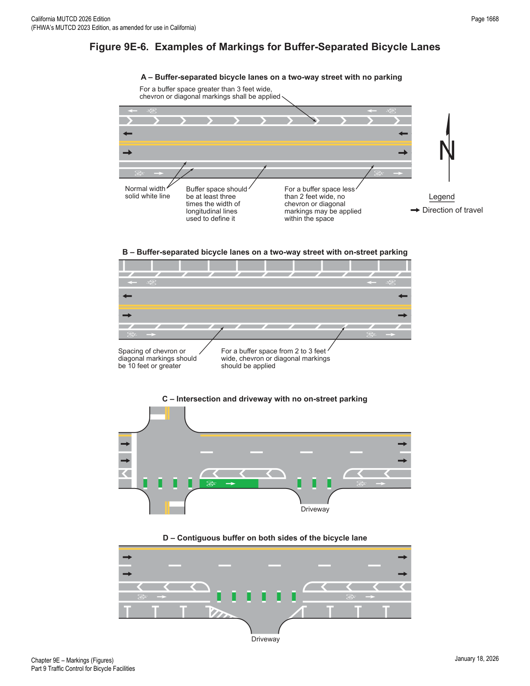
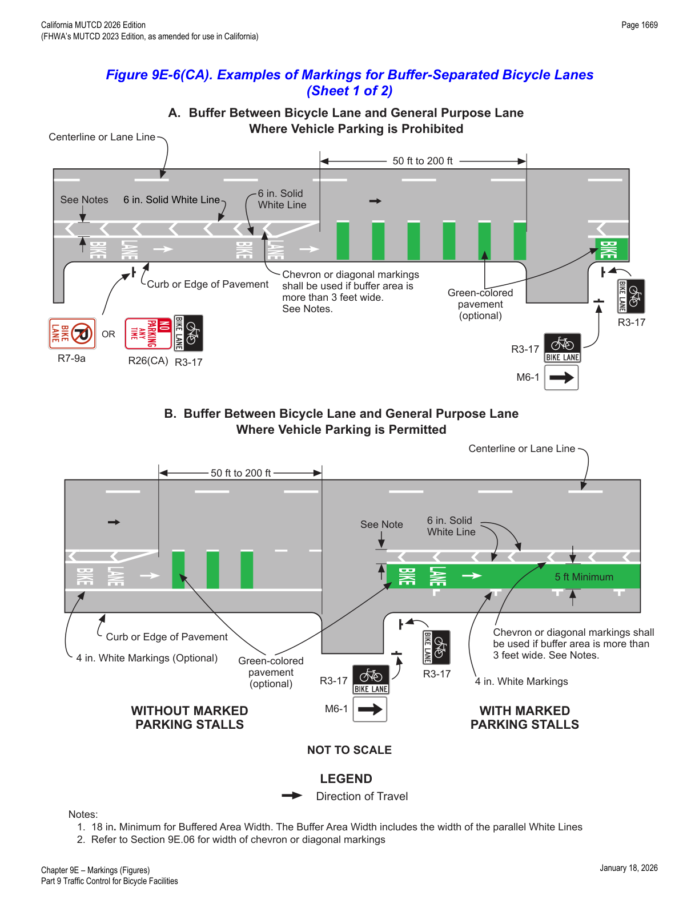
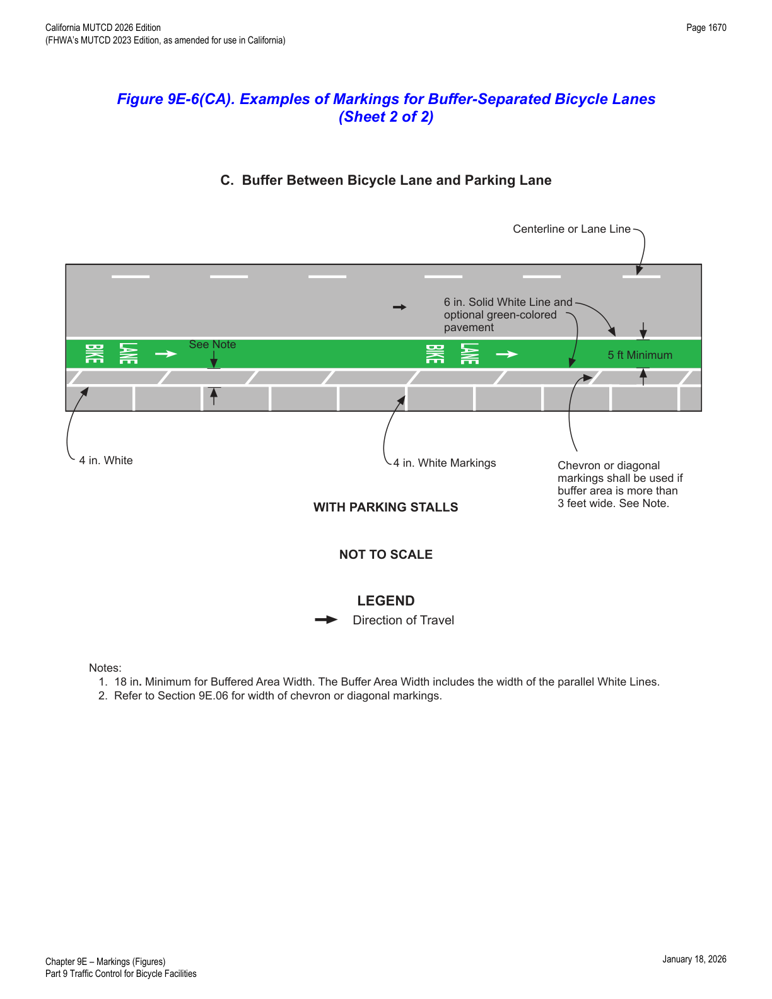
9E.07Separated Bicycle Lanes (Class IV Bikeway (Cycle Track or Separated Bikeways))
- 00aRefer to Sections 1C.02, 9E.06, and SHC § 890.4.
- 00bAll topics in this section referencing buffer, buffer area, and buffer space for a buffer-separated bicycle lane shall be understood to apply to a Class II Bikeway. All topics in this section referencing buffer, buffer area, and buffer space for a separated bicycle lane shall be understood to apply to a Class IV Bikeway (Cycle Track or Separated Bikeway).
- 01Separated bicycle lanes provide a physical separation between a general-purpose lane and a bicycle lane through the use of vertical objects or vertical separation. Providing physical separation between a bicycle lane and a general-purpose lane can reduce vehicle encroachment into the bicycle lane beyond a marked buffer alone and can in some cases prevent that encroachment altogether.
- 02Physical separation between general-purpose lanes and bicycle lanes introduces additional design considerations over buffer-separated bicycle lanes, including the awareness of a potentially unexpected conflict point for turning motor vehicles and the provision of adequate sight distance for all users at intersections and driveway crossings.
- 03Vertical elements used to provide physical separation between general-purpose lanes and bicycle lanes may include, but are not limited to, tubular markers, raised islands, parked vehicles, grade separation, flexible delineator posts, bikeway separator posts, inflexible physical barriers, or on-street parking.
- 03aRefer to Figure 9E-106(CA). Refer to Caltrans' Design Information Bulletin Number 89, Class IV Bikeway Guidance (Separated Bikeways/Cycle Tracks) for more information.
- 03bRefer to FHWA's "Separated Bike Lane Planning and Design Guide" for detailed information on planning and design of separated bike lanes.
- 03cVertical elements, vertical objects, or vertical separation between the general-purpose lane and bicycle lane shall be used to define a Class IV Bikeway (cycle track, separated bikeway, or separated bicycle lane).
- 03dVertical elements are not traffic control devices in themselves; however, when placed in a position identical to a line of channelizing devices and marked and/or equipped with appropriate channelization features to provide guidance and warning both day and night, they function as traffic control devices.
- 04Where on-street parking is provided adjacent to the buffer area of a separated bicycle lane, pedestrians will need to access those vehicles.
- 05BIKE LANE (R3-17) signs (see Figure 9B-1) should be used to distinguish a separated bicycle lane from a general-purpose lane. Refer to Paragraph 00a and 00b in this section.
- 06Where an on-street parking lane serves as the separation between a general-purpose lane and a separated bicycle lane, a buffer space should be provided between the parking lane and the bicycle lane to allow for opening doors of parked vehicles. Refer to Paragraph 00a and 00b in this section.
- 07Separated bicycle lanes may be designed for one-way or two-way bicycle travel. Providing one-way separated bicycle lanes in the same direction as and on the right-hand side of the general-purpose lane, whether on a one-way or two-way roadway, accommodates the expectations of road users and might result in fewer conflict points at intersections or driveway crossings.
- 08Separated bicycle lanes may be provided on one or both sides of a roadway or in a center median.
- 08aA through separated bicycle lane may be positioned to the right of a right-turn-only lane or to the left of a left-turn-only lane if bicycle signals are used. Refer to Section 4H.101(CA) for optional use of Bicycle Signal Faces.
- 09The presence of two-way separated bicycle lanes on one side of a roadway or in a center median can introduce additional challenges and conflict points, which can warrant additional design considerations when selecting the design for a separated bicycle lane. These considerations include design requirements for pedestrians who would interact with the separated bicycle lane.
- 10The edge line and lane line colors used for separated bicycle lanes shall conform to the requirements in Chapter 3A (see Figure 9E-7).
- 10aWhere separated bikeways (cycle track or separated bicycle lane) are designed for two-way travel, a solid yellow line shall be used to separate the two directions of travel where passing is not permitted. A broken yellow line shall be used where passing is permitted (refer to Figure 9E-106(CA); refer to Section 9E.13 for marking patterns).
- 11Directional arrows shall be used in conjunction with the bicycle lane symbol or word marking in separated bicycle lanes, placed downstream from the symbol or word marking. Refer to Paragraph 00a and 00b in this section.
- 11aThe Bike Symbol pavement markings (Figure 9E-1) shall be placed on the far side of each intersection.
- 11bThe dashed bike lane marking, with or without green-colored pavement between left and right dash, may be placed through an intersection.
- 11cThe DO NOT ENTER (R5-1) sign with the supplemental EXCEPT BICYCLES (R3-7bP) regulatory plaque may be used on separated bikeways (cycle tracks or separated bicycle lanes) to reduce the likelihood of accidental entrance by motor vehicles.
- 12Turns on red shall be prohibited across separated bicycle lanes while bicyclists are allowed to proceed through the intersection.
- 13Additional information on signals for bicycle facilities is found in Chapter 4H.
- 14The buffer space for a separated bicycle lane shall be marked with solid longitudinal lines. Refer to Paragraph 00a and 00b in this section.
- 14aRefer to FHWA's List of Known Errors for an error in the Paragraph 14 text. Refer to Section 1A.04 for more details.
- 15A marked buffer space that is 2 feet or wider for a separated bicycle lane, including those buffer spaces where tubular markers are provided, shall use chevron or diagonal markings within the buffer, unless physical separation is provided that occupies the majority of the buffer space, such as raised islands or other physical dividers, or an on-street parking lane that occupies the majority of the buffer space. Refer to Paragraph 00a and 00b in this section.
- 15aIf accessible parking or loading zones are provided on a roadway alongside a separated bikeway (cycle track or separated bicycle lane), unobstructed access by bicycles shall be maintained.
- 16Where used in the buffer area of a separated bicycle lane, the spacing of chevrons or diagonal markings should be 10 feet or greater. Refer to Paragraph 00a and 00b in this section.
- 17Crosswalks that cross a separated bicycle lane should be marked consistent with the style of crosswalk marking provided across the adjacent general-purpose lane.
- 18Where on-street parking is provided as the physical separation adjacent to the buffer area of a separated bicycle lane, the chevron or diagonal marking provisions in Section 9E.06 apply to the area outside of the marked parking area within the buffer (see Figure 9E-7).
- 19Intersection treatments for separated bicycle lanes can vary depending on the geometric and operational conditions at the intersection (see Section 9E.02).
- 20If used in buffer-separated bicycle lanes, channelizing devices should be placed in the buffer space and at least 1 foot from the longitudinal bicycle lane pavement marking.
- 21The flexible bikeway separator posts should be placed in the center of a marked buffer that is preferably 3 feet wide, with 2 feet being the minimum width.
- 22For the separated bikeway (cycle track or separated bicycle lane) at sidewalk level, the separation may include flexible bikeway separator posts a minimum of 1.5 feet from the face of curb.
- 23An inflexible physical barrier should be used in lower-speed environments (posted speed 35 mph or less), placed in a marked buffer preferably 3 feet wide, with 2 feet minimum width. In higher-speed environments, a concrete barrier should be used.
- 24For a separated bikeway at sidewalk level, the separation may include the inflexible physical barrier a minimum of 1.5 feet from the face of curb.
| Separator type | Preferred width | Minimum width | Sidewalk-level offset from curb face |
|---|---|---|---|
| Flexible bikeway separator posts | 3 ft (centered in buffer) | 2 ft | 1.5 ft minimum |
| Inflexible physical barrier (posted speed ≤ 35 mph) | 3 ft | 2 ft | 1.5 ft minimum |
| Concrete barrier (higher-speed environments) | — | — | — |
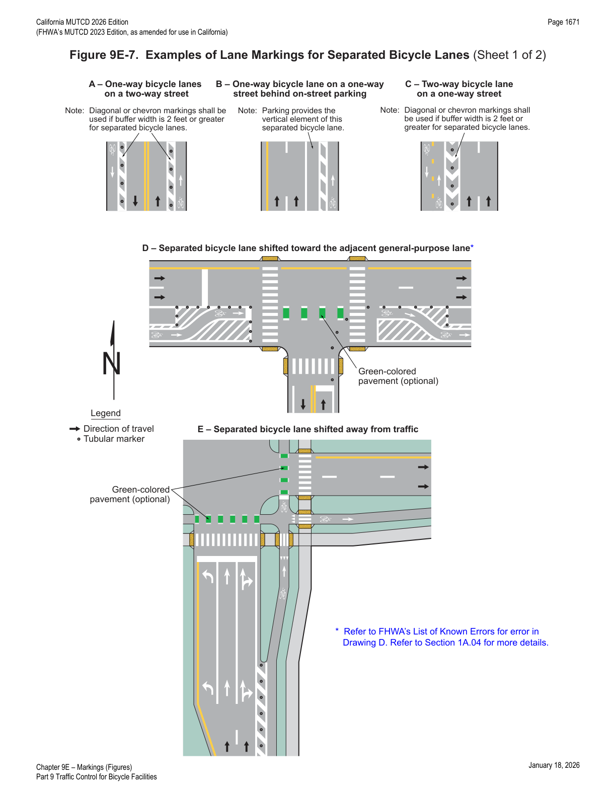
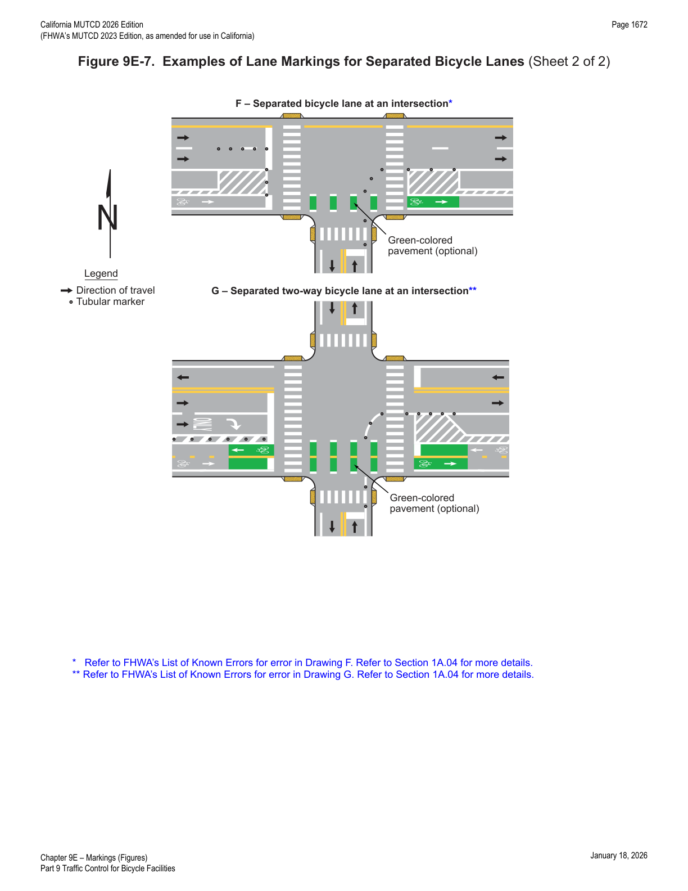
In practice, the distinction between Section 9E.06 (buffer-separated, pavement markings only, no vertical elements — Class II) and Section 9E.07 (separated, vertical elements required — Class IV) is the single most important classification decision in this chapter, since it determines which paragraph set (9E.06 vs 9E.07) governs buffer width, chevron spacing, and turn-lane positioning rules.
9E.08Counter-Flow Bicycle Lanes (Class II Bikeway or Class IV Bikeway)
- 01Counter-flow bicycle lanes are one-directional and provide a lawful path of travel for bicycles in the opposite direction from general traffic on a roadway that allows general traffic to travel in only one direction.
- 02Counter-flow bicycle lanes establish two-way traffic on a roadway. Section 9B.21 contains information on the Left Turn Yield to Bicycles (R10-12b) sign used with traffic signals and counter-flow bicycle lanes.
- 02aCounter-flow bicycle lanes can be provided as a Class II Bikeway (bike lane, bicycle lane, or buffer-separated bicycle lane) or as a Class IV Bikeway (cycle track, separated bikeway, or separated bicycle lane), depending upon the physical separation provided between a general-purpose lane and a bicycle lane. If the separation is provided by a pattern of pavement markings without vertical elements, it is a Class II Bikeway; if the separation is provided by vertical objects or vertical separation, it is a Class IV Bikeway. Refer to Sections 1C.02, 9E.06, 9E.07, and SHC § 890.4.
- 03Where used, a counter-flow bicycle lane should be marked such that bicycles in the counter-flow lane travel on their right-hand side of the road in accordance with normal rules of the road, with opposing traffic on the left.
- 04Counter-flow bicycle lanes located at the edge of the roadway shall use double yellow center line pavement markings (see Section 3B.01), a painted median island, a raised median island (see Chapter 3J), or some form of physical separation where the speed limit is 30 mph or less.
- 05For speed limits 35 mph or greater, a buffer per Section 3B.25, a painted or raised median island, or some form of physical separation shall be used to separate a counter-flow bicycle lane from the adjacent travel lane.
- 06Lane extension markings should be used where counter-flow bicycle movements cross intersections.
- 07Counter-flow bicycle lanes should not be used between a general-purpose lane and an on-street parallel parking lane for motor vehicles.
- 08Counter-flow bicycle lanes located between a general-purpose lane and an on-street parallel parking lane for motor vehicles can limit visibility of bicycles for vehicles exiting the parking lane, potentially impacting the safety of bicyclists. Locating counter-flow bicycle lanes at the edge of the roadway can reduce conflicts for bicycles.
- 09Where signs are provided to regulate turns from streets or driveways that intersect with a roadway that has a counter-flow bicycle lane, ONE WAY signs (see Section 2B.49) shall not be used. Movement Prohibition signs (see Section 2B.26) with supplemental EXCEPT BICYCLES (R3-7bP) regulatory plaque(s) shall be used (see Figure 9E-8).
- 10If a DO NOT ENTER (R5-1) sign package is used at egress points for motor vehicle traffic, the EXCEPT BICYCLES (R3-7bP) regulatory plaque(s) shall be placed under the DO NOT ENTER sign (see Figure 9E-8) where a counter-flow bicycle lane is used.
- 11Where intersection traffic controls are provided (such as STOP or YIELD signs or traffic signals), appropriate devices shall be provided and oriented toward bicyclists in the counter-flow lane.
- 12At signalized locations, appropriate bicycle signalization (see Chapter 9F) shall be provided and oriented toward bicyclists in the counter-flow lane, including a method for counter-flow bicycles to actuate the green phase for the counter-flow movement.
- 13Higher levels of traffic control or additional signalization, signing, and/or pavement marking treatments can be helpful for intersecting traffic where the counter-flow bicycle movement is unexpected.
- 14A Bicycle Cross Traffic warning plaque (see Section 9C.06) should be used below a STOP sign on the crossroad at intersections where a counter-flow bicycle lane is provided on the primary street.
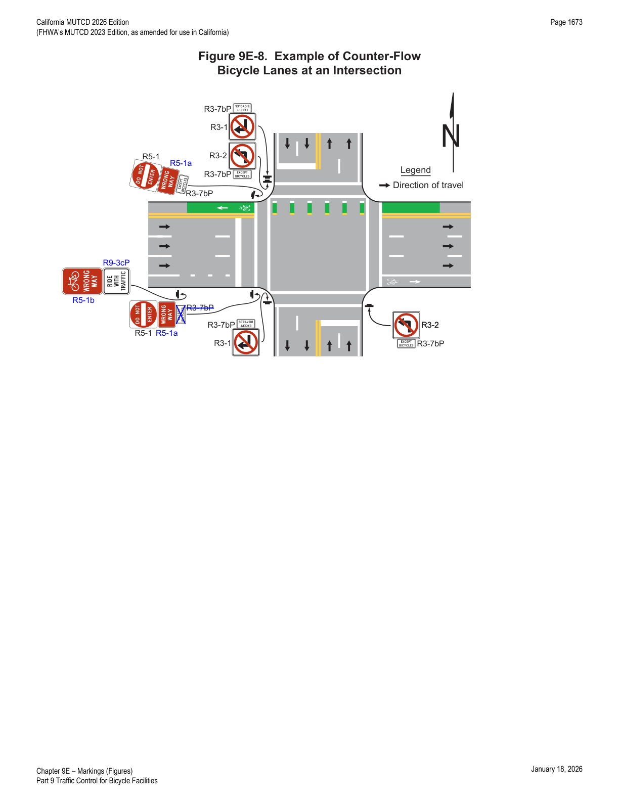
In practice, the 30 mph / 35 mph threshold in Paragraphs 4–5 mirrors the threshold used elsewhere in this chapter for dashed-stripe length — treat 30 mph and below as the "light separation" tier (double yellow or median island) and 35 mph and above as the "buffer or physical separation required" tier.
9E.09Shared-Lane Marking
- 01The "Standard Highway Signs" publication (see Section 1A.05) contains details on the shared-lane marking symbol.
- 02The shared-lane marking shown in Figure 9E-9 may be used to: (A) assist bicyclists with lateral positioning in a shared lane with on-street parallel parking in order to reduce the chance of a bicyclist impacting the open door of a parked vehicle; (B) assist bicyclists with lateral positioning in lanes that are too narrow for a motor vehicle and a bicycle to travel side-by-side within the same traffic lane; (C) alert road users of the lateral location bicycles are likely to occupy within the traveled way; (D) encourage safe passing of bicycles by motor vehicles; (E) reduce the incidence of wrong-way bicycling in the roadway; (F) assist bicyclists with lateral positioning in mixing zones; (G) assist bicyclists with lateral positioning within a traffic circle or roundabout (refer to Figure 9E-104(CA)); (H) supplement a signed bicycle route that is identified as a Class III bicycle facility; (I) encourage the lateral positioning of bicyclists away from on-street angled parking; and (J) indicate that a bicycle can travel straight through a right-turn or left-turn-only lane.
- 03The shared-lane marking should not be placed on roadways that have a speed limit of 40 mph or greater.
- 03aThe shared-lane marking shall not be placed on roadways that have a posted speed limit greater than 30 mph, except at or near an intersection for the purpose of connecting a Class I, Class II, or Class IV bikeway through the intersection. Refer to SHC § 891.9.
- 03bOn roadways that have a speed limit greater than 30 mph, a Class II bikeway or Class IV bikeway is more appropriate to facilitate bicycle travel.
- 04Shared-lane markings shall not be used in: (A) shoulders; (B) bicycle lanes or in designated extensions of bicycle lanes through intersections or driveways; (C) a travel lane in which light-rail transit vehicles also travel; (D) the transition area where a motor vehicle entering a mandatory turn lane must weave across bicyclists in bicycle lanes; (E) two-stage turn boxes; (F) bicycle boxes; (G) shared-use paths or shared-use path crossings; or (H) physically separated bikeways, either in the roadway or on an independent right-of-way.
- 05Green-colored pavement shall not be applied as a background to shared-lane markings (see Section 3H.06).
- 06Black background markings (see Section 3A.03) may be used in combination with shared-lane markings to enhance contrast.
- 06aThe effective lane width, as used in this section, indicates the width of the pavement available after subtracting the width of the parked vehicle and door zone from the distance of the lane line/centerline to the face of the curb/edge of the pavement.
- 07If used in a shared lane with on-street parallel parking and the effective lane width is 14 feet or greater, shared-lane markings should be placed so the centers of the markings are a minimum of 12 to 13 feet from the face of the curb, or from the edge of the pavement where there is no curb. If the effective lane width is less than 14 feet, the marking should be centered within the effective lane width. Refer to Figure 9E-105(CA).
- 08If used on a street without on-street parking that has an outside travel lane less than 14 feet wide, shared-lane markings should be centered in the travel lane. If the outside travel lane is 14 feet or greater, the shared-lane markings should be placed so the centers of the markings are a minimum of 4 feet from the face of the curb, or from the edge of the pavement where there is no curb.
- 08aIf used on a shared right-turn or left-turn-only lane that is less than 14 feet wide, to indicate that a bicycle may travel straight through an intersection, the centers of the shared-lane markings should be centered in the travel lane. If used on a shared right-turn or left-turn-only lane that is 14 feet or greater, the shared-lane markings should be centered at least 4 feet from the edge of the channelizing line. Refer to Figure 9E-107(CA) and Figure 9E-108(CA).
- 08bPlacing shared-lane markings on the wheel paths should be avoided where possible.
- 08cWhen a shared lane is sufficiently wide that motor vehicles can pass bicyclists within the lane, the purpose of the shared-lane marking is to indicate a bicyclist line of travel that facilitates passing while avoiding fixed obstructions (e.g., drainage inlet, gutter joint). When a shared lane is not wide enough to enable passing with adequate clearance, the purpose of the marking is to indicate a bicyclist line of travel that deters passing within the lane.
Spacing
- 09At non-intersection locations, the shared-lane marking should be spaced at intervals of not less than 50 feet or greater than 250 feet.
- 10The first shared-lane marking downstream from an intersection should be placed no more than 50 feet from the intersection.
- 10aCloser spacing between shared-lane markings may be considered approaching, traversing, and departing intersections, where there is higher potential for conflicts between motorists and bicyclists. Refer to Figure 9E-3(CA) and Figure 9E-4.
- 10bCloser spacing may be considered where there are sight distance constraints, for example, approaching the crest of a vertical curve.
- 10cCloser spacing may be considered to guide bicyclists when deviating from a straight line of travel (e.g., merging, angled railroad crossing).
- 11Section 9B.14 describes a Bicycles Allowed Use of Full Lane sign that may be used in addition to or instead of the shared-lane marking to inform road users that bicyclists might occupy the travel lane.
- 12If the Bicycles Allowed Use of Full Lane (R9-20) sign is used in addition to the shared-lane marking, the shared-lane marking should be placed so that the center of the marking is in the approximate center of the travel lane.
- 13The shared-lane marking may be used (see Figure 9E-9) where the width of the roadway is insufficient to continue a bicycle lane or separated bikeway on the approach to the intersection, or it is advantageous to terminate the bicycle lane or separated bikeway in order to provide for a shared lane.
- 14The shared-lane marking may be used on an approach to an intersection (see Figure 9E-5) in a mandatory turn lane to indicate a shared space for bicyclists and motorists where there is insufficient width in the roadway for both the bicycle lane and turn lane.
| Condition | Effective/travel lane width | Marking placement |
|---|---|---|
| On-street parallel parking present | ≥ 14 ft | Center of marking 12–13 ft from face of curb / pavement edge |
| On-street parallel parking present | < 14 ft | Centered within effective lane width |
| No parking, outside travel lane | < 14 ft | Centered in travel lane |
| No parking, outside travel lane | ≥ 14 ft | Center of marking at least 4 ft from face of curb / pavement edge |
| Shared right-/left-turn-only lane | < 14 ft | Centered in the travel lane |
| Shared right-/left-turn-only lane | ≥ 14 ft | Centered at least 4 ft from edge of channelizing line |
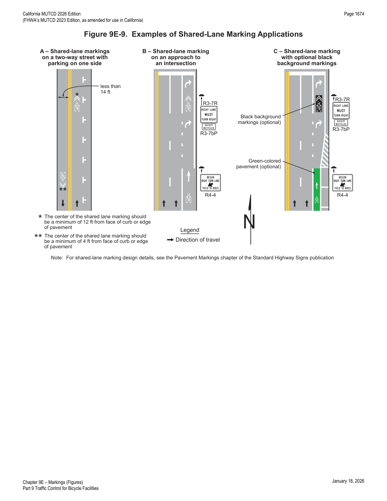
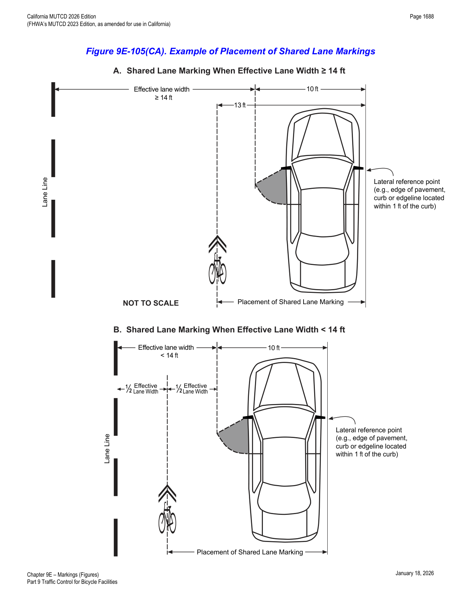
In practice, the two speed thresholds in this section are easy to conflate: 40 mph is the Guidance-level "should not" ceiling (Paragraph 3), while 30 mph is the Standard-level "shall not" ceiling except at intersection connections (Paragraph 3a) — the binding limit for compliance purposes is 30 mph, not 40.
9E.10Shared-Lane Markings for Circular Intersections
- 01Shared-lane markings may be used in the circulatory roadway of circular intersections.
- 02If used, shared-lane markings should be placed in the center of the lane when used inside of circulatory roadways.
- 03The "Guide for Development of Bicycle Facilities," 2012 Fourth Edition, American Association of State Highway and Transportation Officials, contains information on designing for bicycles on shared-use paths in lieu of, or in addition to, using shared-lane markings in the circulatory roadway of the intersection.
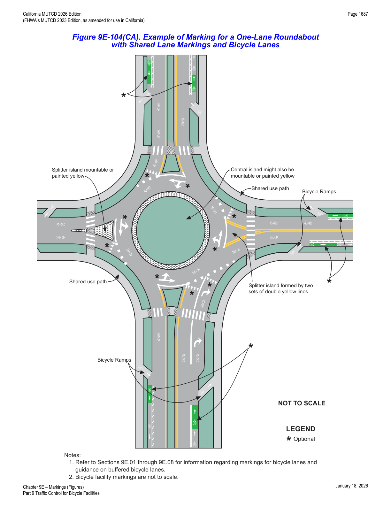
9E.11Two-Stage Bicycle Turn Boxes
- 01Two-stage bicycle turn boxes allow bicyclists the opportunity to make turns at an intersection or crossing point instead of requiring them to merge into traffic upstream or to dismount and use a crosswalk at the intersection or crossing point.
- 02Section 9B.18 contains information on regulatory signing that shall be used in conjunction with a two-stage bicycle turn box pavement marking where bicyclists are required to use the turn box.
- 03Section 9D.13 contains information on guide signing that can be used in conjunction with a two-stage bicycle turn box pavement marking where bicyclists are not required to use the turn box.
- 04If used, two-stage bicycle turn boxes shall be located: (A) in an area between the closest through bicycle or motor vehicle movement and the parallel crosswalk (see Drawing A in Figure 9E-10); (B) in an area between the through bicycle movement and the parallel pedestrian crossing movement if no crosswalk is established (see Drawing B in Figure 9E-10); (C) on the innermost side of the bicycle facility provided that the two-stage turn box is located in a portion of the intersection where parallel or motor vehicle traffic does not travel, such as projections of islands or parking lanes (see Drawing C in Figure 9E-10); or (D) in an area between the through bicycle movement and a pedestrian facility for T-intersections (see Drawing D in Figure 9E-10).
- 04aRefer to FHWA's List of Known Errors for an error in the Paragraph 4, Item C text. Refer to Section 1A.04 for more details.
- 05A two-stage bicycle turn box shall consist of at least one bicycle symbol pavement marking and at least one pavement marking arrow.
- 06A turn arrow in the appropriate direction shall be used if a two-stage turn box is used with a one-way bicycle lane, and a through arrow in the appropriate direction shall be used if a two-stage turn box is used with a two-way bikeway (see Figure 9E-11).
- 07A two-stage bicycle turn box shall be bounded on all sides by a solid white line.
- 08For two-stage bicycle turn boxes that facilitate turns from a one-way bikeway, the bicycle symbol shall precede the pavement marking turn arrow in the direction of bicycle travel (see Figure 9E-10).
- 09Passive detection of bicycles in the two-stage bicycle turn box shall be provided if the signal phase that permits bicycles to enter the intersection during the second stage of their turn is actuated.
- 10Engineering judgment should be used to develop the size of the two-stage bicycle turn box. Factors considered should include intersection geometry and keeping queued bicycles away from moving traffic, as well as peak-hour bicycle volumes to avoid overflow of the two-stage turn box that subjects any bicyclist to conflicting movements.
- 11The two-stage turn box may use green-colored pavement.
- 12If used, green-colored pavement shall encompass all of the two-stage turn box.
- 13Where the path of vehicles lawfully turning on red would pass through a two-stage bicycle turn box, a full-time no-turn-on-red prohibition (see Section 2B.60) shall be provided for the crossroad approach.
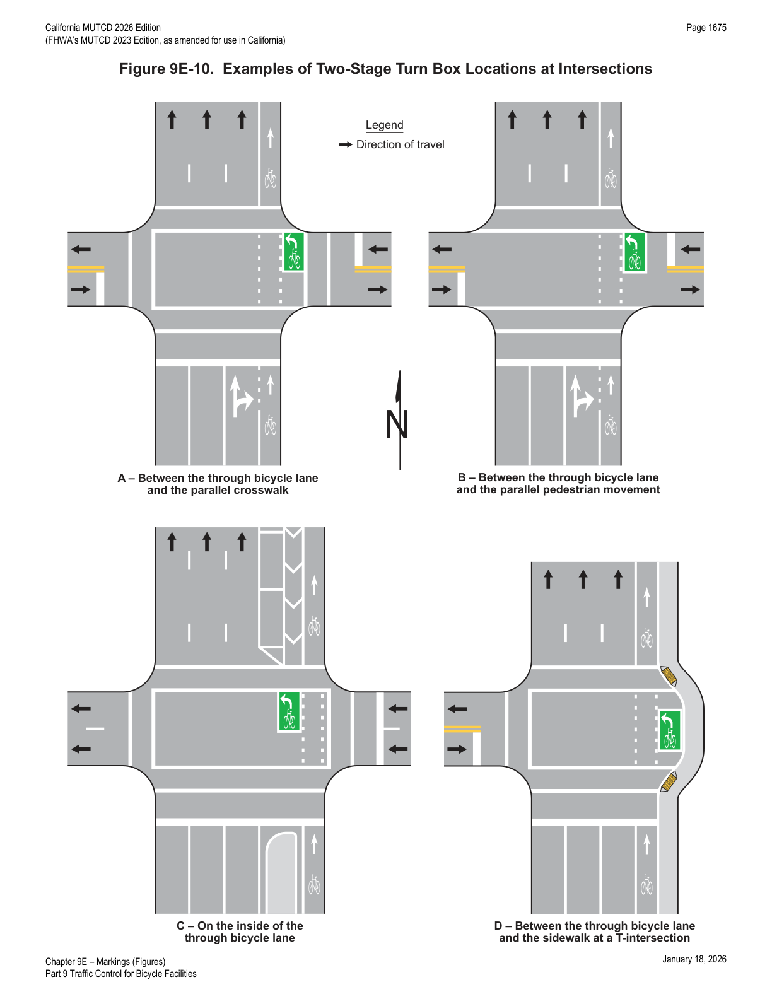
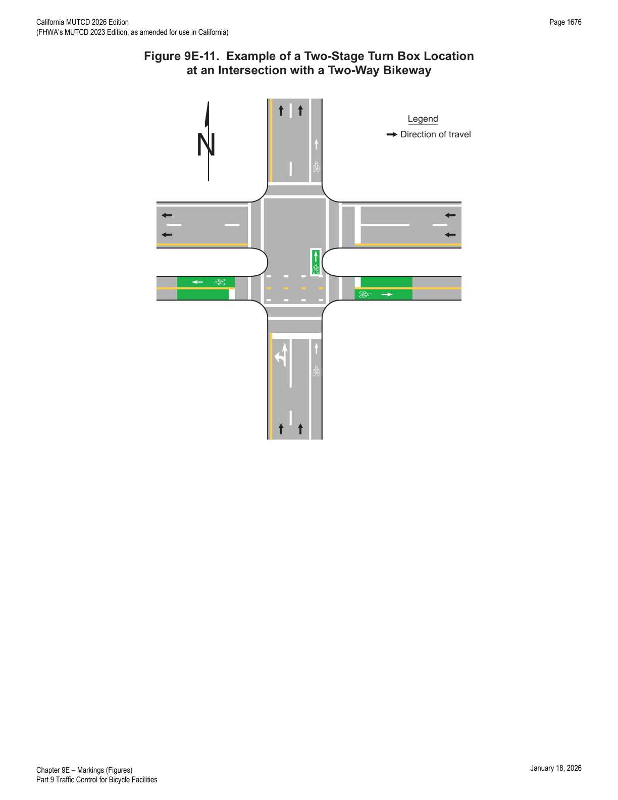
9E.12Bicycle Box
- 01A bicycle box (see Figure 9E-12) may be used to increase the visibility of stopped bicycles on the approach to a signalized intersection during the portion of the signal cycle when a red signal indication is being displayed to motor vehicles in the approach lane(s) behind the box.
- 02Providing a bicycle box on a signalized intersection approach where a discernible number of conflicts between vehicles turning across through bicycles in a bicycle lane has been demonstrated during the green interval of a signal should be evaluated based on engineering judgment or study.
- 03Other treatments should be considered for conflicts between turning vehicles and through bicycles, such as using leading or exclusive signal phases, or separating turning traffic from through traffic through mandatory turn lanes.
- 04A bicycle lane should be used on the approach to a bicycle box.
- 05A bicycle box should not be contiguous with a crosswalk. A stop line on the downstream end of the bicycle box should be used to mark the location where bicycles are required to stop.
- 06If used, the distance from the upstream edge of the bicycle box nearest the stop line for motor vehicles to the downstream edge of the bicycle box nearest the crosswalk or intersection shall be at least 10 feet. At least one bicycle symbol marking (see Figure 9E-12) shall be used in the bicycle box.
- 07Where an existing stop line for motor vehicles is relocated upstream to install a new bicycle box, the yellow change and red clearance intervals (see Section 4F.17) shall be recalculated and, if necessary, reprogrammed to accommodate the length of the bicycle box.
- 08Countdown pedestrian signals (see Section 4I.04) for the crosswalk or pedestrian crossing movement that crosses the approach shall accompany bicycle boxes that extend across more than one approach lane for motor vehicles. Countdown pedestrian signals used with bicycle boxes shall display the pedestrian change interval countdown without the need for actuation.
- 09Turns on red shall be prohibited from the lane where a bicycle box is placed.
- 10Countdown pedestrian signals can inform bicyclists whether there is adequate time remaining to an adjacent lane before the onset of the green signal phase for that approach.
- 11Countdown pedestrian signals for the crosswalk or pedestrian crossing movement that crosses the approach should accompany single-lane bicycle boxes where it is demonstrated that bicycles arrive at the intersection at or near the end of the red signal indication being displayed to traffic in the approach lane(s) behind the box.
- 12Green-colored pavement may be used in a bicycle box.
- 13If used, green-colored pavement shall be used in the full limits of the bicycle box.
- 14Section 9B.02 contains information on the EXCEPT BICYCLES (R3-7bP) regulatory plaque that can be used below the STOP HERE ON RED (R10-6 or R10-6a) sign (see Section 2B.59) to exempt bicyclists from the requirement of the advance stop line.
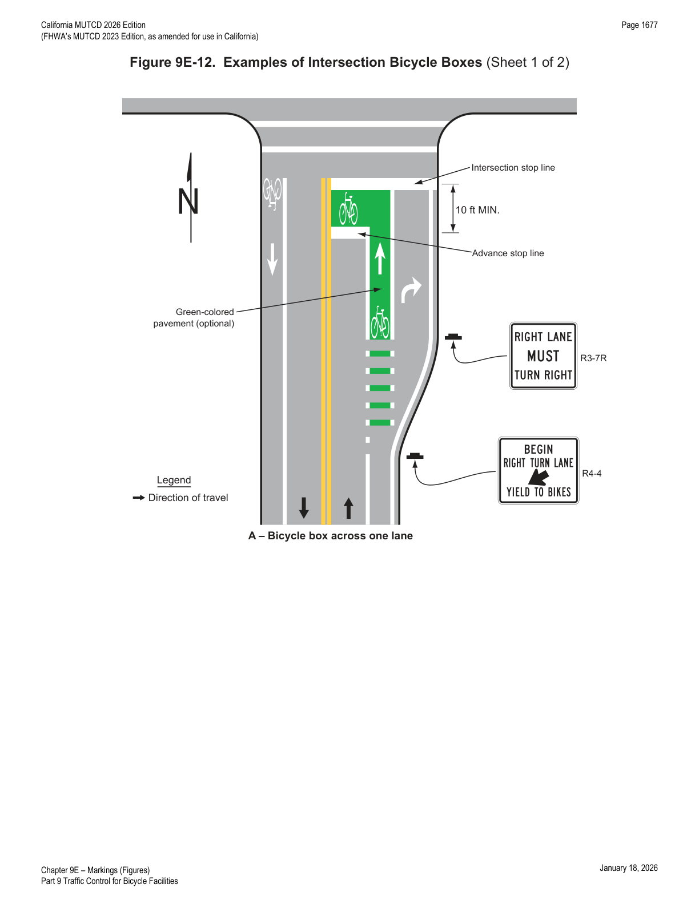
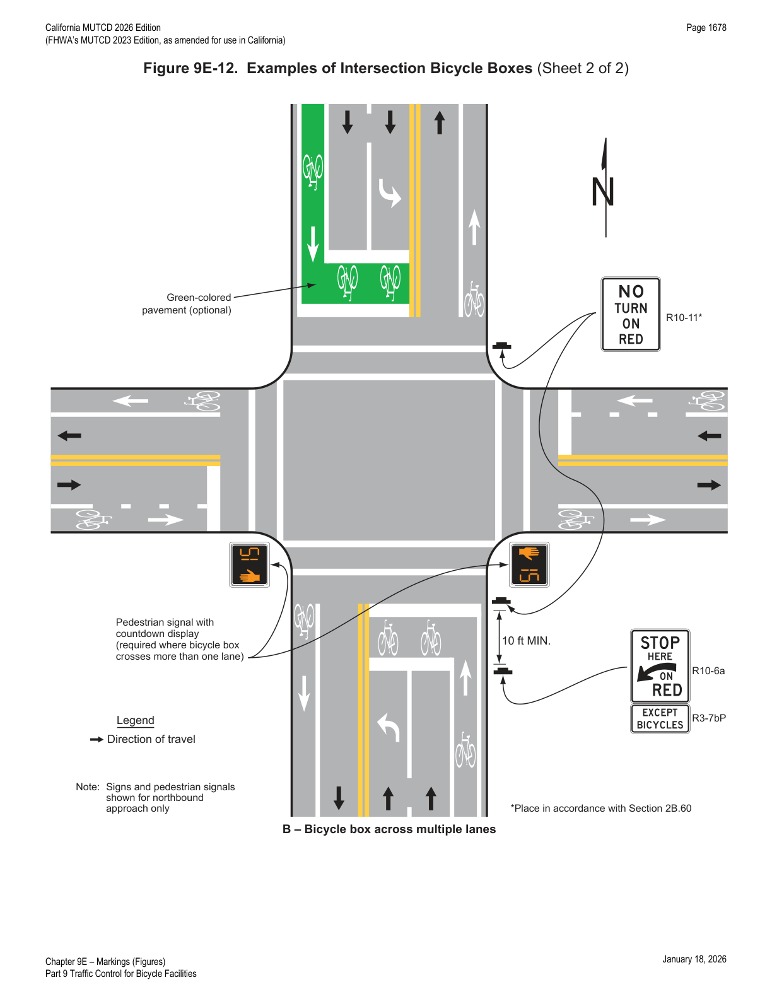
In practice, the 10-foot minimum bicycle box depth (Paragraph 6) and the mandatory no-turn-on-red (Paragraph 9) are the two items most often overlooked when retrofitting an existing signalized approach with a bicycle box — both require recalculating and potentially reprogramming signal timing per Paragraph 7.
9E.13Shared-Use Paths (Class I Bikeway (Bike Path))
- 01Where shared-use paths are of sufficient width to designate two minimum-width lanes, a solid yellow center line may be used to separate the two directions of travel where passing or traveling to the left of the line is not permitted. A broken yellow center line may be used where passing is permitted (see Figure 9E-13).
- 02Broken lines used on shared-use paths should have a nominal 3-foot segment with a 9-foot gap.
- 02aA centerline marking is particularly beneficial in the following circumstances: (A) where there is heavy use; (B) on curves with restricted sight distance; and (C) where the path is unlighted and nighttime riding is expected.
- 03A solid white line may be used on shared-use paths to separate different types of users in the same direction. The R9-7 sign (see Section 9B.13) may be used to supplement the solid white line.
- 03aA solid white line may be used to delineate the traveled way of the bike path from the shoulder if the shoulder is paved with the same material as the bike path.
- 03bRefer to Caltrans' Highway Design Manual Index 1003.1, Class I Bikeways (Bike Paths).
- 04Smaller size pavement word markings and symbols may be used on shared-use paths. Where arrows are needed on shared-use paths, half-size layouts of the arrows may be used (see Section 3B.20).
- 05Where a shared-use path crosses a roadway, crosswalk markings shall be used (see Chapter 3C).
- 06Where pedestrian and bicycle movements on a shared-use path are separated on the approach to a roadway crossing, parallel bicycle and pedestrian crossing markings may be used as shown in Figure 9E-14.
- 07If parallel bicycle and pedestrian crossing markings are used where a shared-use path crosses a roadway, crossing areas for bicycles should use green-colored pavement if the shared-use path crossing has a high volume of either mode.
Barrier Posts on Class I Bikeways (Bike Path)
- 08Before a decision is made to install barrier posts, consideration needs to be given to the implementation of other remedial measures, such as Bike Path Exclusion (R44A(CA)) signs (refer to Section 9B.07) and/or redesigning the path entry so that motorists do not confuse it with vehicle access.
- 09It could be necessary to install barrier posts across the width of the bike path, at entrances to bike paths, to prevent motor vehicles from entering or to slow down bicyclists approaching an intersection with vehicular traffic. This can occur where bike paths intersect vehicular roadways, especially if the width of the bike path at its intersection could lead drivers on the vehicular roadway to confuse the bike path with a vehicular roadway. The number of barrier posts installed needs to be an odd number, resulting in an even number of passages, to provide an equal number of passageways for each direction. Barriers need to be well marked and visible to bicyclists, day and night (i.e., install reflectors or reflectorized tape).
- 10An envelope around the barriers should be striped as shown in Figure 9E-17. If sight distance is limited, special advance warning signs or painted pavement warnings should be provided. Where more than one post is necessary, 5-foot spacing should be used to permit passage of bicycle-towed trailers and adult tricycles, and to assure adequate room for safe bicycle passage without dismounting. Barrier post installations should be designed so they are removable to permit entrance by emergency and service vehicles.
- 11Generally, barrier configurations that preclude entry by motorcycles present safety and convenience problems for bicyclists. Such devices are used only where extreme problems are encountered.
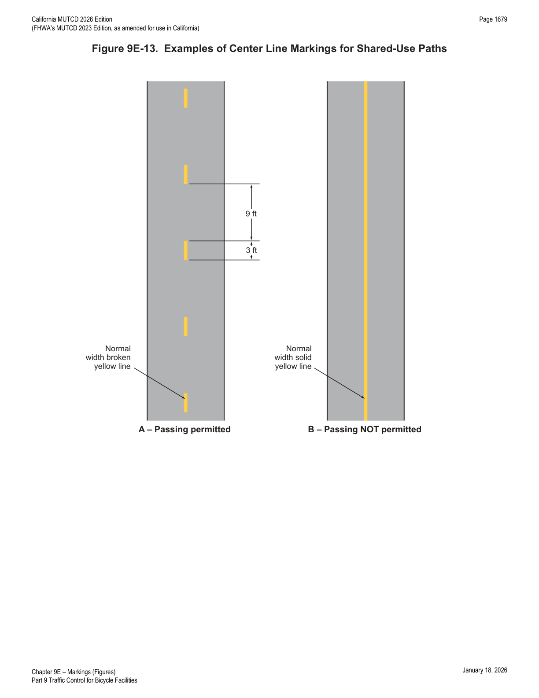
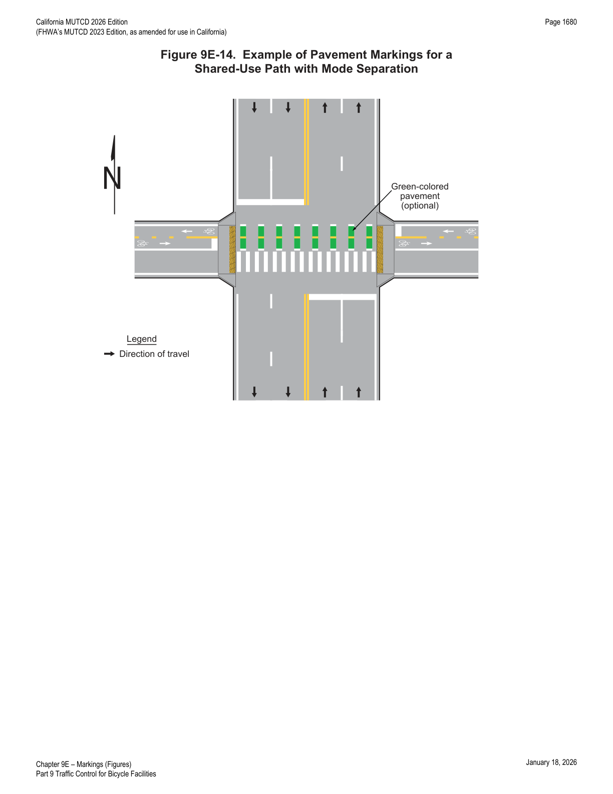
9E.14Bicycle Route Pavement Markings (Class III Bikeway (Bike Route))
- 01Bicycle route pavement markings simulating guide signs for bicycle routes (see Section 9D.02 through 9D.07) and route auxiliary plaques (see Section 9D.08) may be used to supplement guide signing to help bicyclists in navigation (see Figure 9E-15).
- 02Bicycle route pavement markings shall be limited to shared-use paths (Class I Bikeway), separated bicycle lanes (Class II or Class IV Bikeway), or buffer-separated bicycle lanes (Class II Bikeway). Bicycle route pavement markings shall not be used in standard bicycle lanes (Class II Bikeway) or in shared lanes (Class III Bikeway).
- 02aClass III Bikeways (Bike Route) are shared routes and do not require pavement markings. In some instances, a 4- to 6-inch-wide white edge stripe on local agency roadways and a 6-inch-wide stripe on state highways, separating the traffic lanes from the shoulder, can be helpful in providing for safer shared use. This practice is particularly applicable on rural highways and on major arterials in urban areas where there is no vehicle parking.
- 03A systematic methodology of locating guide signs for bicycle routes adjacent to the bicycle route pavement marking should be used that includes locations where either the sign or the pavement marking can exist alone, to avoid overuse of the guide sign or the pavement marking.
- 04The route marker pavement marking should be elongated.
- 05The location, size, and materials of the route marker pavement marking should be designed in a manner that will minimize the loss of traction for bicyclists under wet conditions.
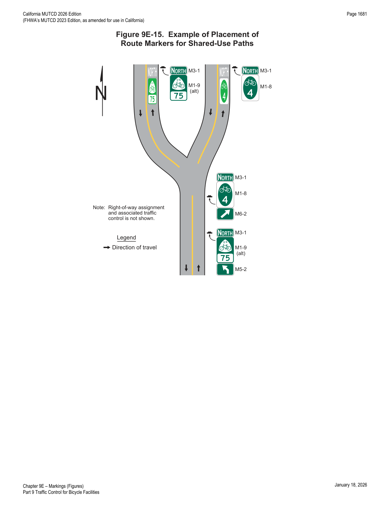
9E.15Bicycle Detector Symbol
- 01The bicycle detector symbol (see Figure 9E-16) may be placed on the pavement indicating the optimum position for a bicycle to actuate the signal.
- 02Appropriately sized WAIT HERE FOR GREEN word markings may be placed on the pavement immediately below the bicycle detector symbol.
- 03An R10-22 sign (see Section 9B.20) may be installed to supplement the bicycle detector symbol pavement marking.
- 04The "Standard Highway Signs" publication (see Section 1A.05) contains details on the bicycle detector symbol.
- 05Section 3H.06 contains information on incorporating green-colored pavement as a background enhancement to the bicycle detector symbol.
- 06Section 4H.102(CA) and Figure 4H-101(CA) contain information on bicycle detectors and their locations.
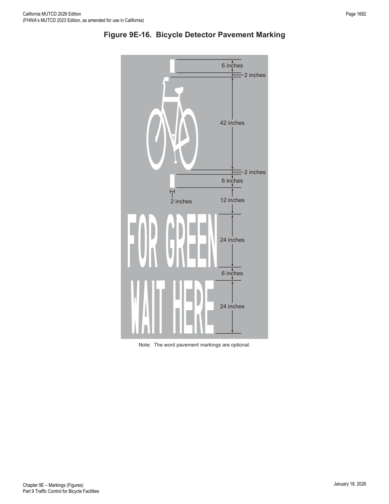
9E.16Pavement Markings for Obstructions
- 01Markings as shown in Figure 9E-17 should be used at the location of obstructions in the center of a shared-use path or a physically separated bikeway, including vertical elements intended to physically prevent unauthorized motor vehicles from entering the path.
- 02For roadway situations where it is impracticable to eliminate a drain grate or other roadway obstruction that is inappropriate for bicycle travel, white markings applied as shown in Figure 9E-17 should be used to guide bicyclists around the condition.
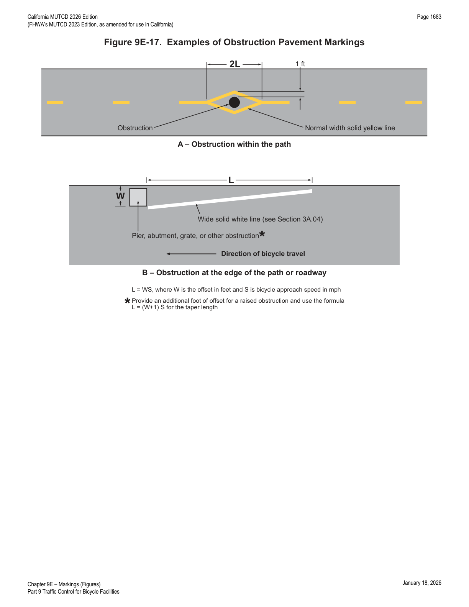
9E.17Raised Devices (Class IV Bikeway (Cycle Track, Separated Bikeway or Separated Bicycle Lane))
- 01Chapter 3I contains information on using channelizing devices to emphasize pavement marking patterns associated with certain bicycle facilities. A common application is the use of flexible raised devices to create separated bicycle lanes (see Section 9E.07).
- 02Using inflexible raised devices immediately adjacent to the travel path of a bicyclist without a buffer creates a collision potential for bicyclists.
- 03In accordance with Chapter 3I, channelizing devices may be used to emphasize a pavement marking pattern that establishes a bicycle lane or other bicycle facility, provided that the installation of channelizing devices does not prevent motor vehicles from turning when the turn requires the motor vehicle to merge with the bicycle lane or facility as required by law or ordinance.
- 04If used, channelizing devices for bicycle facilities should be tubular markers (see Section 3I.02).
- 05The selection of a raised device for use with bicycle facilities should consider the collision potential of both the post and the base, since the base might still be present in the event the post is struck and missing.
- 06Measures to reduce the likelihood of a road user striking a channelizing device include marking a buffer space, improving lighting, improving retroreflectivity, or the periodic addition of taller vertical elements within runs of shorter elements.
- 07Channelizing devices that are used to emphasize the pavement marking patterns of bicycle facilities shall not incorporate the color green into either the device or its retroreflective element to supplement the presence of green-colored pavement.
- 07aRefer to Sections 3A.03 and 3I.01 for the color of channelizing devices, when used in bicycle facilities.
- 08If used in buffer-separated bicycle lanes, channelizing devices should be placed in the buffer space and at least 1 foot from the longitudinal bicycle lane pavement marking.
- 09Refer to FHWA's List of Known Errors for an error in the Paragraph 08 text. Refer to Section 1A.04 for more details.
This section closes the numbered sections of Chapter 9E; the remaining figures in the source PDF (Figures 9E-101(CA) through 9E-109(CA)) are California-specific composite drawings referenced throughout the sections above rather than the subject of their own numbered section. They are reproduced below for reference, grouped by the topic they illustrate.
Reference Figures: California-Specific Composite Drawings (9E-101 through 9E-109)
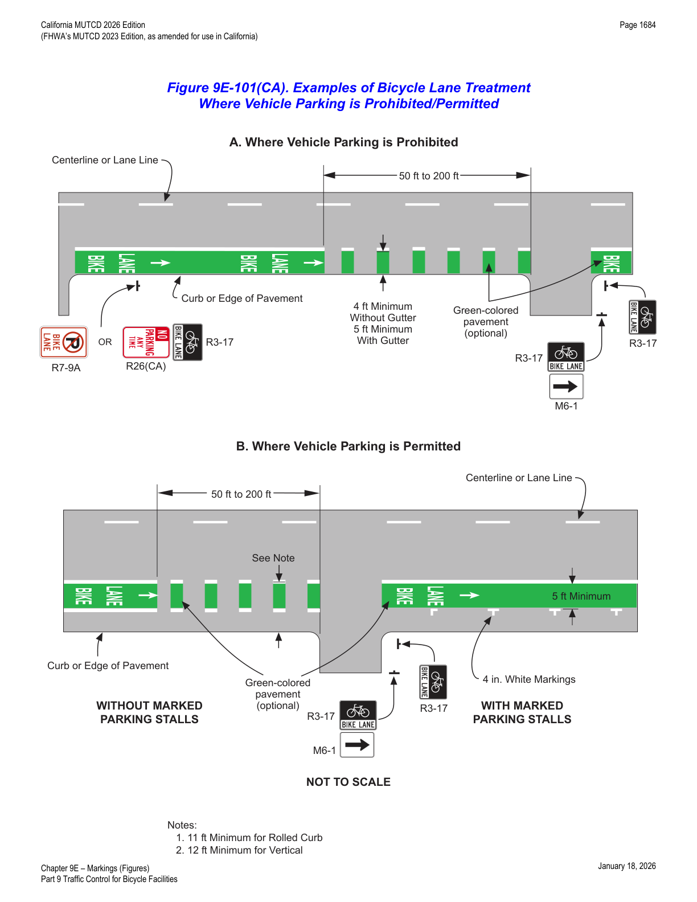
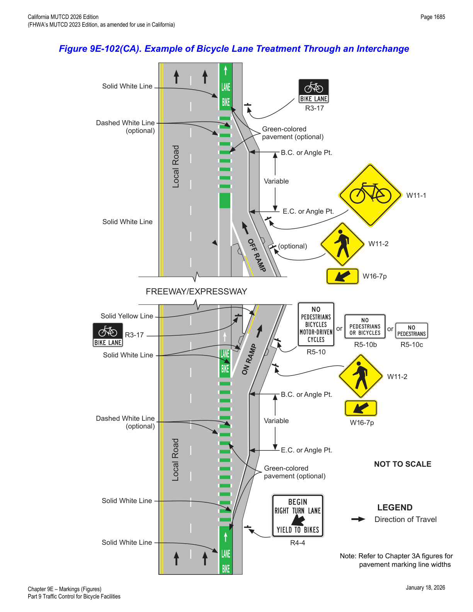
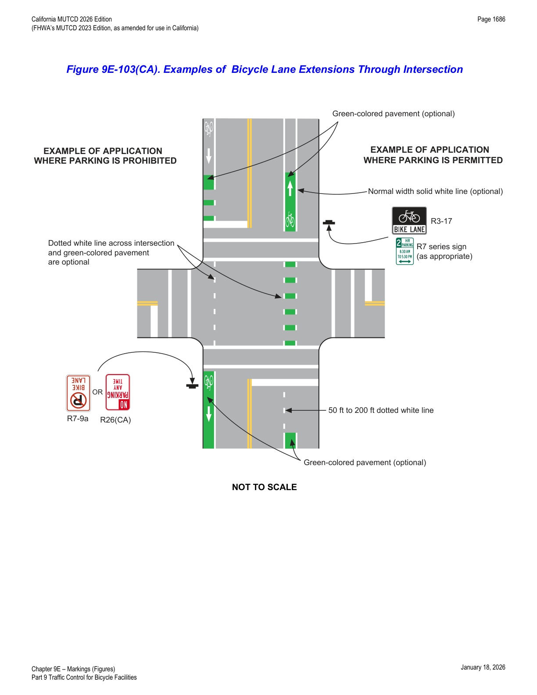
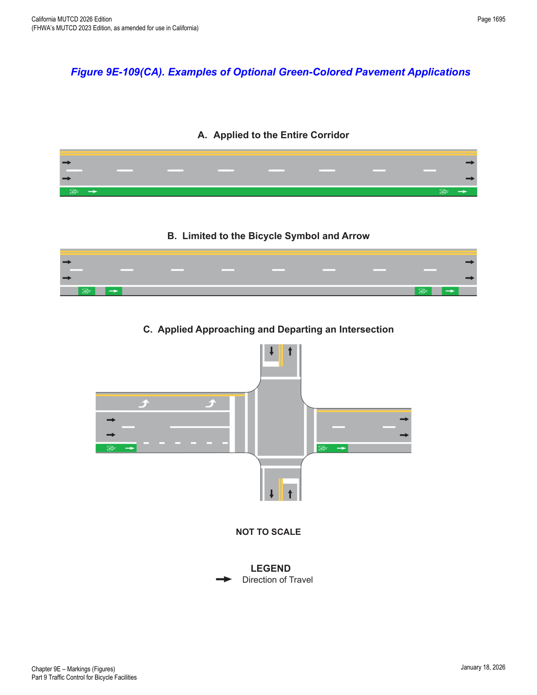
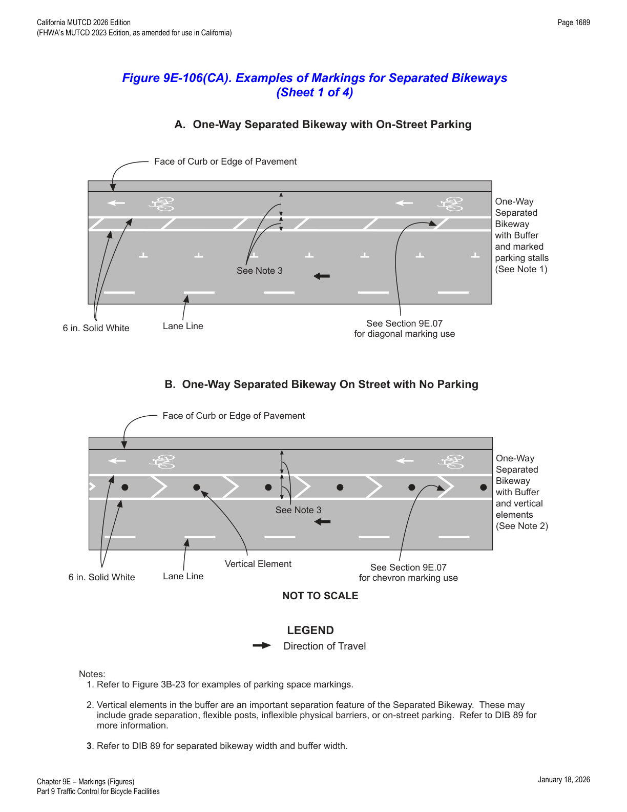
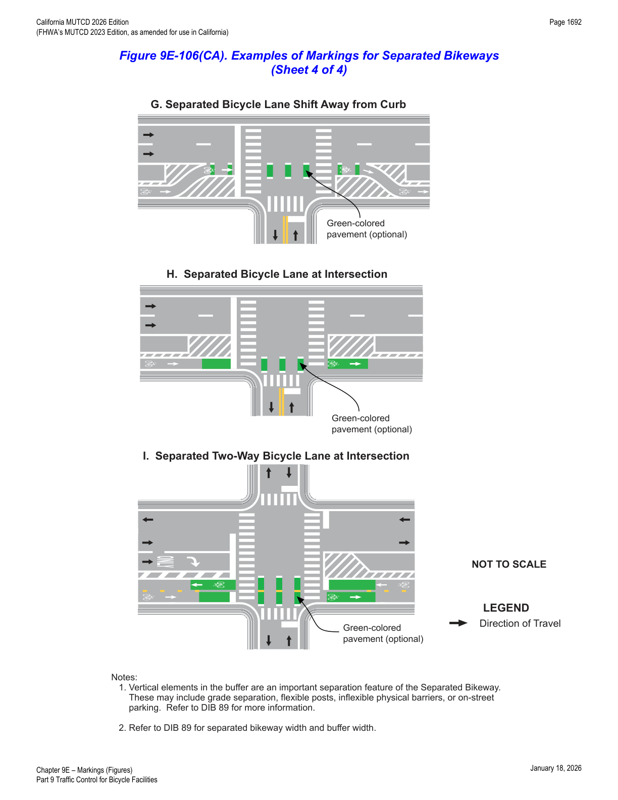
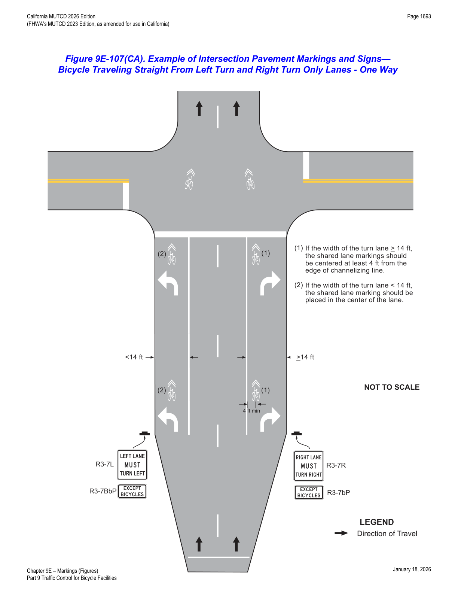
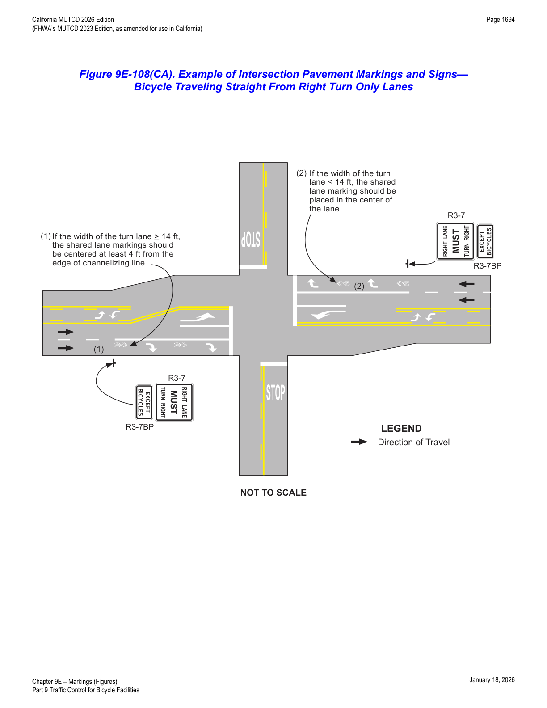
★ Key Takeaways — Chapter 9E
- Chapter 9E covers pavement markings across all four bikeway classes: Class I (shared-use path, 9E.13), Class II (bike lane / buffer-separated bicycle lane, 9E.01–9E.06, 9E.08), Class III (bike route, 9E.14), and Class IV (separated bikeway/cycle track, 9E.07–9E.08, 9E.17).
- The Class II vs. Class IV distinction turns entirely on whether separation is provided by pavement-marking patterns alone (buffer-separated, Section 9E.06) or by vertical elements/objects (separated, Section 9E.07) — this determines which set of buffer-width and turn-lane rules applies.
- A through bicycle lane may never be positioned to the right of a right-turn-only lane or left of a left-turn-only lane except where a bicycle signal (Chapter 4H) controls the movement (Section 9E.02).
- Key dimensional thresholds to remember: dashed bike-lane stripe length 50–200 ft depending on block length/speed (9E.01); 100-ft bicycle-lane stop-back before a mandatory turn lane and before circular-intersection crosswalks (9E.02, 9E.05); buffer width triggers for chevron/diagonal markings at 2 ft and 3 ft (9E.06, 9E.07); shared-lane marking speed ceiling of 30 mph standard / 40 mph guidance and spacing of 50–250 ft (9E.09); 10-ft minimum bicycle box depth (9E.12).
- Mixing zones (9E.02) are permitted only for one-way bicycle lanes running with adjacent traffic, require yield markings, and must carry shared-lane markings plus turn arrows where they continue to the intersection.
- Two-stage bicycle turn boxes (9E.11) and bicycle boxes (9E.12) are both Option-level treatments with strict Standard-level geometry and signal-timing requirements once installed — turns on red must be prohibited across both.
- Raised barriers and raised pavement markers are prohibited for delineating Class II bike lanes (9E.01) but vertical elements are required to create a Class IV separated bikeway (9E.07, 9E.17); channelizing devices used for bicycle facilities may never incorporate green color (9E.17).
- Green-colored pavement is optional throughout most bicycle facility markings but is explicitly prohibited as a background for shared-lane markings (9E.09) and, where used in a two-stage turn box or bicycle box, must cover the box's full limits (9E.11, 9E.12).